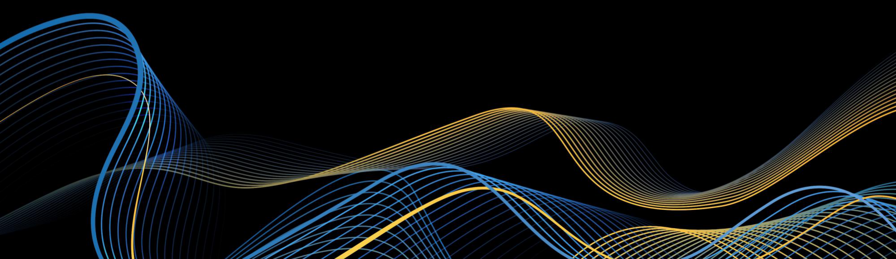

Skills SDD: especialistas de IA que construyen solo lo que el desarrollador aprueba
SDD (desarrollo guiado por especificación): el paquete de diseño de cada historia de usuario es el insumo; Diseño entrega el spec aprobado, y solo entonces se construye.
Una skill, un especialistaHace una sola tarea, siempre igual, y sabe qué recibe y qué entrega.
Se activa solaEl asistente lee el pedido del usuario y el estado del trabajo, y elige la skill adecuada.
Se detiene cuando importaEn los puntos clave espera a una persona. Nada importante pasa sin OK.
De la HU al cambio integrado: la IA trabaja, las personas deciden
Paso 1
sdd-arquitecturaDesarrollo: decisiones de fondoSe activa cuando se cambia el stack, la base de datos o el despliegue.
sdd-estado y sdd-ramasDesarrollo: apoyoEstado, al iniciar cualquier tarea. Ramas, una por historia de usuario.
sdd-hotfixEntrega y OperaciónSe activa cuando el usuario reporta un fallo en lo que ya corre.
Siempre pide el OK del desarrolladorIntegrar o borrar trabajo
Diseño convierte el paquete de cada historia en un spec aprobado
Una capacidad puede reunir una o varias historiasCada historia es un cambio con su rama, su Gate 1 y su trailer SDD-HU en el historial.
Lo que pasa a DesarrolloSpec aprobado + criterios CA-NN + plan. El paquete queda referenciado como forma exacta, no copiado.
Lo que una fase entrega, la siguiente lo usa
Insumos (gris) y entregables (azul) con su extensión. Nuevo = artefacto propuesto.
Todo queda local. Ninguna skill publica ni sube nada.
Un script guarda. Valida las reglas antes de cada cambio.
El historial es la memoria. Cada paso queda registrado.

1TCS confidential